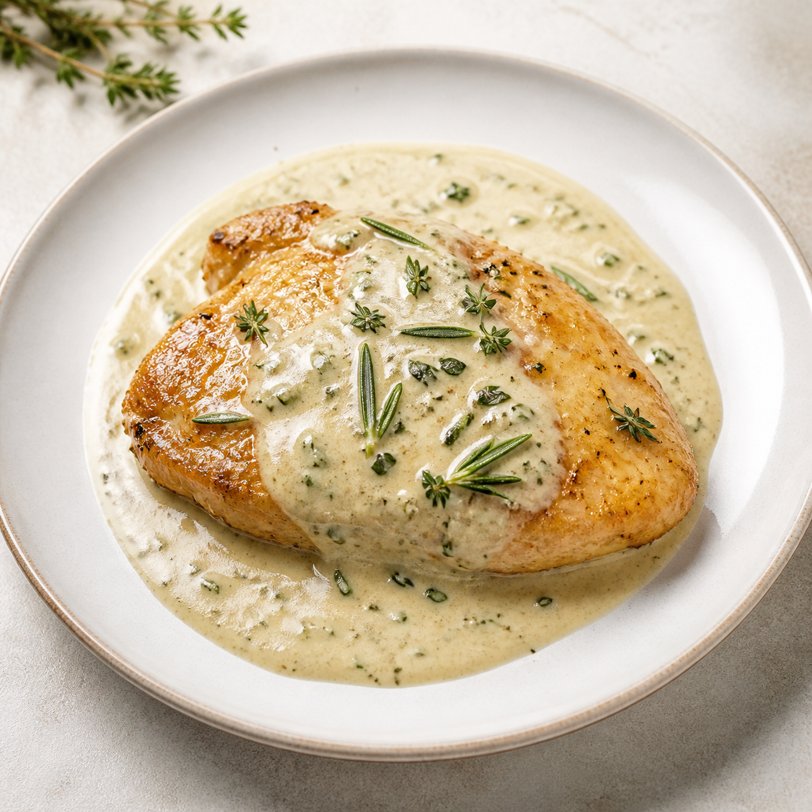

← Zpět do databáze
✎ Upravit

Oběd ·
10
porcí
Popis
Pracovní poznámka
Historie použití
Za 12 měsíců
Průměr
Nejkratší
Vyhodnocení
Suroviny na
10
porcí
Upravit recept
×
Název
Popis
Alternativní názvy
Poznámka
Porce
Cena porce
Druh masa
Bezmasé
Kuřecí
Vepřové
Hovězí
Ryba
Jiné
Příloha
Úprava
Neurčeno
Smažené
Zapečené
Pečené
Vařené
Dušené
Studené
Stav
Aktivní
Vyřazené
Archivované
Dostupnost
Neurčeno
Celoročně
Sezónní
Sezóna
Neurčeno
Jaro
Léto
Podzim
Zima
Podzim–zima
Jaro–léto
Jaro–Léto–Podzim
Celoročně
Měsíce
Oblíbenost
Neurčena
1
2
3
Poslední použití
Zrušit
Uložit